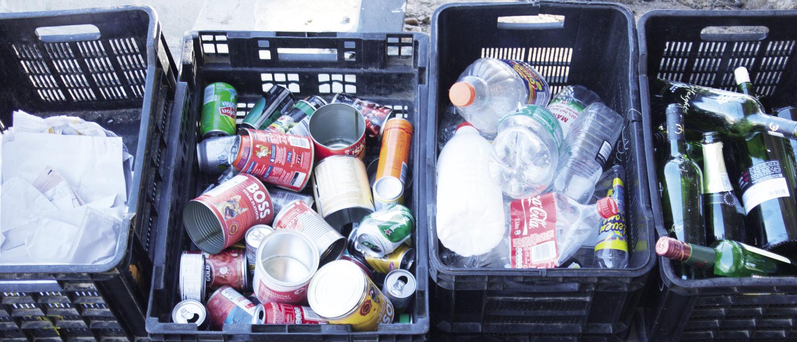
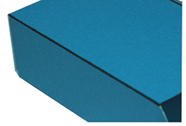
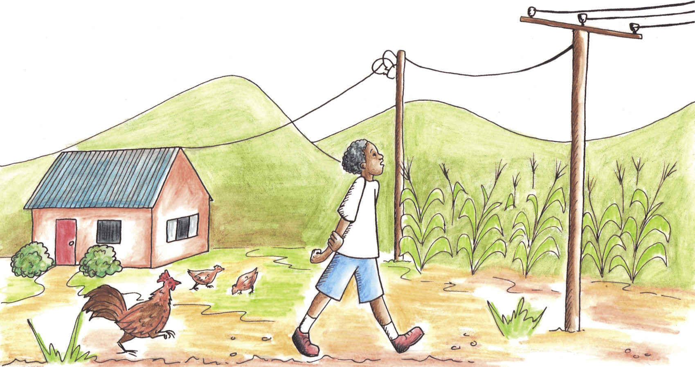
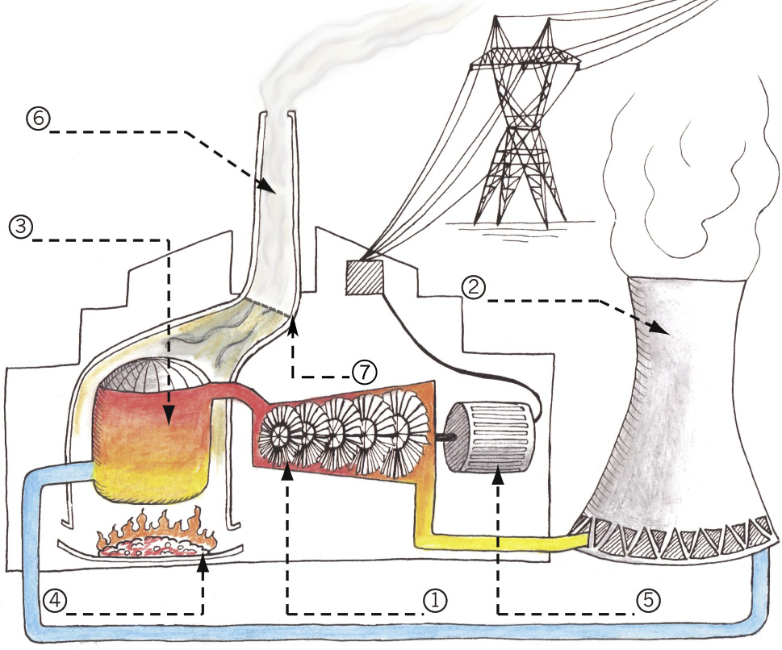
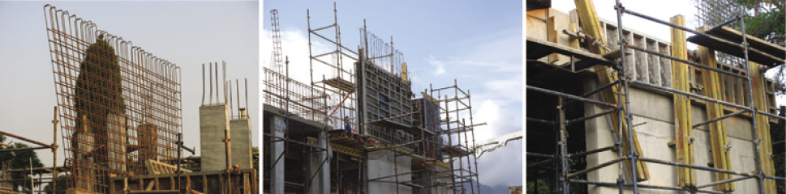
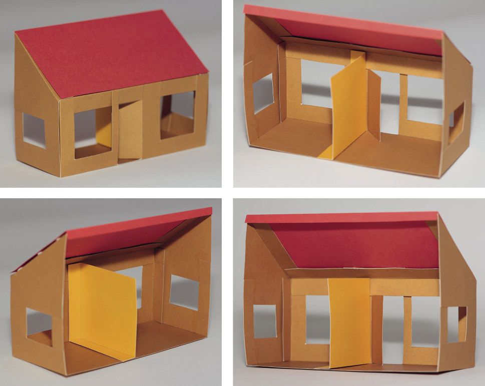
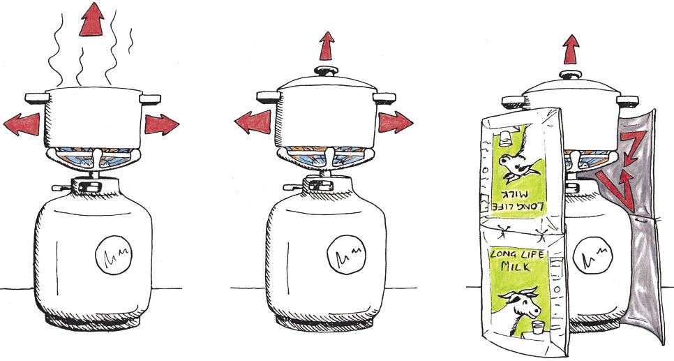

In hierdie hoofstuk gaan jy uitvind hoe afvalplastiek die omgewing skade aandoen. Jy gaan ook leer hoe hierdie negatiewe impak verminder kan word.
8.1 Waarvan word dinge gemaak? 112
8.2 Wat gebeur met dinge wat weggegooi word? 115
8.3 Hoe kan ons mense keer om plastieksakke weg te gooi? 118

Figuur 1: Waarvan is hierdie skoppelmaai gemaak?
Jare gelede kon mense net die materiale gebruik wat hulle in die natuurlike omgewing rondom hulle kon vind. Die “natuurlike omgewing” is al die natuurlike dinge om ons, soos lug, water, grond, plante en diere. ’n Paar voorbeelde van natuurlike materiale is hout, leer, klei en gras.
Vandag gebruik mense baie nuwe materiale wat nie in die natuurlike omgewing voorkom nie. Hierdie materiale word in fabrieke vervaardig. Hulle word dikwels vervaardig uit olie en steenkool, wat uit die grond kom. Dit sluit materiale in soos plastiek, spesifieke verfsoorte en materiale waarvan klere gemaak word. Jy het dalk al gehoor van poliëster, en van PVA-verf en neoprene-rubber. Hierdie materiale word sintetiese materiale genoem.
Daar is baie voordele verbonde aan die gebruik van sintetiese materiale. Hulle is dikwels meer duursaam en ook ligter en goedkoper as natuurlike materiale. Iets is duursaam as dit lank hou.
Die gebruik van sintetiese materiale het egter ook nadele. Wanneer hulle weggegooi word, hou die afval vir ’n baie lang tyd. Dit is daarom beter om die sintetiese materiaal oor en oor te gebruik. Dit word die “hergebruik” van materiale genoem.
Omdat sintetiese materiale goedkoop is, kan mense bekostig om meer te koop as wat hulle nodig het. Een van die maklikste maniere om die nadele van sintetiese materiale te verminder is om minder goed te koop. Dit word “verbruiksvermindering” genoem. Voordat jy iets nuuts koop, vra jouself af of jy dit werklik nodig het.
Die gebruik van sintetiese materiaal het ’n ander nadeel waaraan die meeste mense nie aan dink nie. Skadelike afvalmateriaal word gewoonlik gevorm by die fabrieke waar die sintetiese materiale vervaardig word. Hierdie afvalmateriaal kan in die lug, water en grond beland. Moderne fabrieke word beter as die oues ontwerp en stel minder skadelike afval in die omgewing vry.
steenkool
water
elektrisiteit
sintetiese materiale
uitlaatgasse
vloeibare afval
vaste afval
Dit is ‘n goeie idee om sintetiese afval van natuurlike afval te skei. Ons noem dit “afvalskeiding”.
Die afval afkomstig van natuurlike materiale word in die natuurlike omgewing afgebreek om skadelose stowwe soos kompos te vorm. Sommige natuurlike materiale breek in skadelose stowwe op wanneer hulle net vir ’n tydjie in die son of water lê.
’n Materiaal word “biodegradeerbaar” genoem as dit deur natuurlike prosesse tot klein, skadelose stukkies afgebreek kan word.
Materiale wat nie op natuurlike wyse tot skadelose stukkies afgebreek kan word nie, word “nie-biodegradeerbare” materiale genoem.
Baie mense gooi al hulle vrugte- en groenteskille op ’n komposhoop. Hulle gooi ook dooie blare, klein takkies en grassnysels daarop.
Binne die tydperk van ’n paar maande verander die plantafval op die hoop in klein, donker stukkies wat soos grond voel. Hierdie materiaal word kompos of humus genoem. Kompos is ’n waardevolle materiaal omdat plante beter groei in grond wat baie kompos bevat.
’n Komposhoop moet klam en warm gehou word, en dit moet lug kry. Mens doen dit deur die hoop met ’n vel plastiek te bedek en die kompos een keer per week om te woel en deur te werk.

vars groenteafval bo-op gegooi
ou groenteafval wat kompos gevorm het
Figuur 3: ’n Komposhoop
8.1 Waarvan word dinge gemaak?
Kyk om jou na die volgende voorwerpe in jou klaskamer. Skryf die volgende vir elke voorwerp neer:
(a) Waarvan dink jy is hierdie tipe voorwerp honderde jare gelede gemaak, voordat daar sintetiese materiale was.
(b) Waarvan word hierdie voorwerp vandag gemaak.
|
Voorwerp |
Waarvan is dit honderde jare gelede gemaak? |
Waarvan word dit vandag gemaak? |
|
Hemp |
|
Wenk: Kyk na die etiket in jou skoolhemp. |
|
Trui |
|
Wenk: Kyk na die etiket in jou skooltrui. |
|
Pen |
|
|
|
Iets om op te skryf |
Wenk: Waarop het die ou Egiptenare geskryf? Waarop het die Khoisan geteken? |
|
|
Potloodboksie |
|
|
|
Verf |
|
|
|
Dak |
|
|
|
Skooltas |
|
|
Nadat jy die tabel voltooi het, bespreek die antwoorde met die leerder wat langs jou sit.
Huiswerk vir die volgende les
Jy moet hierdie oefeninge doen sodat jy die vrae in die volgende les kan beantwoord.
1. Kyk na die inhoud van vullisblikke en vullissakke. Maak ’n lys van al die vaste materiale daarin.
2. Staan in ’n straat naby jou huis. Kyk om jou rond, sonder om van staanplek te verander. Tel hoeveel plastieksakke jy kan sien. Gaan na ’n ander straat en herhaal die proses. Voltooi dan die onderstaande tabel.
|
|
Getal plastieksakke wat jy kan sien |
|
Straat A |
|
|
Straat B |
|
3. Kyk na die plastieksakke wat buite rondlê wat nog nuut lyk.
Kyk ook na plastieksakke wat buite rondlê en oud lyk.
Waarom lyk sommige plastieksakke nuut en ander oud? Wat het veroorsaak dat die oues so lyk?
4. Kyk na nuwe en ou stukke materiaal wat van plante afkomstig is en wat rondlê, soos hout, grassnysels, papier en karton. Hoe verskil die nuwer stukke van hierdie afval van dié wat reeds vir ’n lang tyd rondlê?

Hoe raak jy van jou vullis ontslae?
Dit is goed vir die omgewing as jy verskillende tipes afval in verskillende vullissakke of kratte sit. Dit word afvalskeiding genoem. As jy byvoorbeeld jou glasafval in ’n krat sit, kan die glas deur ’n vullisversamelaar na ’n fabriek geneem word waar nuwe glas uit ou glas vervaardig word. Dit is baie beter as wat die ou glas op ’n vullishoop lê. Ons sê dat die glas herwin kan word. Jy sal volgende week meer oor herwinning leer.

Figuur 4: Die weeklikse vullis van ’n huishouding wat hul vullis skei
Figuur 5: Die weeklikse vullis van ’n huishouding wat nie hul vullis skei nie
8.2 Wat gebeur met dinge wat weggegooi word?
Bespreek in groepe van drie tot vier
Om hierdie vrae te beantwoord moet jy terugdink aan die oefeninge wat jy vir huiswerk gedoen het.
1. (a) Wat is die verskille tussen afvalmateriale wat reeds lank buite rondgelê het
en afvalmateriaal wat nog net vir ’n kort rukkie buite rondlê?
(b) Watter materiaalsoorte verouder baie met tyd? En watter materiale het nie oor ’n lang tyd verander nie?
(c) Verander party materiale meer oor ’n tydperk as ander?
2. (a) Wat dink jy sal met plastieksakke gebeur wat langer as tien, honderd of
duisend jaar in die omgewing rondlê?
(b) Word die plastieksakke wat as afval weggegooi word al hoe meer? Of vergaan hulle deur bioafbreking? Of gebeur iets anders met hulle?

Verskillende eienskappe van verskillende materiale
Siphosethu gebruik ’n papiersak om haar inkopies te dra.
Brandon gebruik ’n plastieksak.
Thabang gebruik ’n leersak.
Al drie van hulle gebruik hul sak oor en oor, maar die sakke breek na ’n ruk.
Beantwoord vir elke soort sak die volgende vrae. Hierdie werk is individuele werk.
1. Wat sal met die sak gebeur as dit nat word?
|
Papiersak |
|
|
Plastieksak |
|
|
Leersak |
|
2. Moet jy die sak op een of ander manier versorg om dit langer te laat hou?
|
Papiersak |
|
|
Plastieksak |
|
|
Leersak |
|
3. Kan die sak reggemaak word as dit breek? As dit reggemaak kan word, hoe kan dit gedoen word?
|
Papiersak |
|
|
Plastieksak |
|
|
Leersak |
|
4. Waar sal die sak heengaan as dit saam met ander afval, soos vrot kos, weggegooi word? Wat sal dan daarmee gebeur?
|
Papiersak |
|
|
Plastieksak |
|
|
Leersak |
|

Huiswerk
Dink aan ’n plek waar vullis verbrand word. Jy het dalk al sulke plekke gesien.

Figuur 6: ’n Brandende vullishoop
1. Hoe lyk die grond?
2. Hoe lyk die lug?
3. Hoe ruik die lug?

8.3 Hoe kan ons mense keer om plastieksakke weg te gooi?
Gevallestudie: Die negatiewe impak van plastieksakke op
mense en die omgewing
Gedurende die afgelope twee weke het jy heelwat gelees en geleer oor die invloed van plastiekmateriale op mense en die omgewing. Hou dit in gedagte terwyl jy die volgende vrae beantwoord.
1. Wat kan gebeur as ’n dier ’n plastieksak eet?
2. (a) Wat gebeur met mense en diere wat die gas inasem wat afkomstig is van
brandende plastiek?
(b) Waar gaan die rook en gasse heen nadat die vuur uitgebrand het?
(c) Wat bly op die grond agter nadat die plastiek uitgebrand het?
3. Waarna lyk dit as daar ’n klomp plastieksakke om jou huis by die skool, in die straat of in die veld rondlê?
4. Kyk na die foto hieronder:
Figuur 7
Wat kan gebeur as plastieksakke in ’n rivier of stroom beland?
5. Wat gebeur met plastiek wat vir ’n lang tyd in die water lê? Verander dit?

Verslag: Vermindering van die negatiewe impak van plastieksakke
Tot in 2003 het winkels in Suid-Afrika gratis plastieksakke aan kopers gegee om hul inkopies te dra. Hierdie sakke was baie dun en het maklik gebreek. Dit het veroorsaak dat mense die sakke weggegooi het nadat hulle gebruik is.
Die regering wou plastiekafval verminder en vanaf 2003 is winkels verbied om gratis plastieksakke aan kopers te verskaf. Die gebruik van baie dun plastieksakke is ook van toe af onwettig.
Sedertdien moet kopers betaal vir sterker plastieksakke wat herhaaldelik gebruik kan word. Alhoewel die sakke steeds dun lyk, is hulle nie so dun soos die sakke wat voor 2003 gebruik is nie. Baie kopers verkies om nie nuwe sakke te koop nie en neem eerder hul ou inkopiesakke winkels toe.
Dit is ook makliker vir herwinningsfabrieke om die nuwe, dikker plastieksakke vir hergebruik te herwin. Dit help egter net as mense hul vullis in afsonderlike houers sorteer sodat die plastieksakke na die herwinningsfabriek gestuur kan word.
Dink weer aan wat jy gesien het toe jy na die inhoud van vullisblikke en vullissakke en na plastieksakke wat buite rondlê gekyk het. Skryf ’n verslag van ’n halwe bladsy hieroor hieronder, waarin jy die volgende vier vrae beantwoord:
1. Dink jy om mense vir dikker, herbruikbare plastieksakke te laat betaal help om die hoeveelheid plastieksakke wat mense weggooi te verminder?
2. Is daar nog winkels wat dun plastieksakke gratis weggee?
3. Watter persentasie mense dink jy hou hul plastiekafval afsonderlik van hul ander afval, en nie saam met hul ander vullis nie?
4. Is daar ander dinge wat mense kan doen om te sorg dat minder plastieksakke weggegooi word?


Figuur 8: ’n Windturbine wek elektrisiteit op met behulp van die krag van die wind wat waai. Die lemme van die turbine word gemaak van ’n stof bekend as “epoksiehars,” wat met vesel gekombineer word. Dit maak die lemme baie sterk, maar terselfdertyd baie lig. Dit is ook moontlik om hierdie materiaal in ’n spesiale vorm te verwerk.
Volgende week
Volgende week gaan julle in die klas dinge met papier en karton doen. In plaas daarvan om nuwe papier en karton te gebruik gaan julle ou papier en karton hergebruik. Kry oor die naweek ’n paar velle afvalpapier en afvalkarton in die hande en bring dit aan die begin van volgende week saam skool toe. Soek na items soos kartonverpakking vir voedselprodukte.
In die volgende twee weke gaan julle leer hoe papier hergebruik word. Julle sal ook geleer word hoe om nuwe voorwerpe uit ou stukke karton te maak. Julle gaan julle eie verpakkingsmateriaal vir ’n produk maak.
9.1 Hoe word papier en karton gemaak? 126
9.2 Hoe word papier en karton hergebruik? 128
9.3 Teken die ontwikkeling van ’n boks 132
9.4 Maak jou eie boks 134
9.5 Jou finale boks 136
9.6 Maak ’n potloodboksie 137
Figuur 1: Versamel weggooipapier en
weggooikarton afsonderlik van ander vullis
Bome word afgesaag
Papier en karton word in ’n papierfabriek vervaardig
Weggooipapier en -karton
Papier en karton word gebruik
Papier en karton is bioafbreekbaar. Dit doen nie skade aan die natuur as dit weggegooi word nie. Dit kan ook verbrand word om hitte of elektrisiteit te genereer, en geen giftige gas sal in die proses vrygestel word nie. Om papier en karton te vervaardig moet bome egter afgesaag word. As papier en karton hergebruik word, hoef minder bome afgesaag te word.
Het jy geweet?
Die hergebruik van 54 kg koerantpapier maak dat een minder boom afgesaag hoef te word.
Omtrent 40% van munisipale vaste afval is papier en karton.

Papier en karton word na die papierfabriek teruggeneem
Papier en karton word van die ander rommel geskei
Het jy geweet?
Die gemiddelde persoon gebruik byna 50 kg papier en karton per jaar.
Giftige chloorgas word gebruik om papier te bleik. Om te bleik beteken om wit te maak. Die chloor kan gifgasse vorm, wat dioksiene genoem word, en in die atmosfeer vrygelaat kan word.
9.1 Hoe word papier en karton gemaak?
’n Papierherwinningsfabriek maak nuwe papier of karton uit afvalpapier. Hieronder word verduidelik hoe hulle dit doen. Jy kan ook herwinde papier by die huis maak.
1. Afvalpapier word met warm water en chemikalieë gemeng. Dit word deur ’n masjien geroer en opgekap om die klein, dun vesels waarvan papier gemaak word uitmekaar te kry. Die masjien wat die mengsel van water en papier meng en opkap werk soos ’n voedselverwerker.
Die mengsel van opgekapte papier en water word papierpulp genoem.
Figuur 4
2. Die pulp word deur ’n sif gegooi. Ou gom en baie kort vesels gaan deur die sif. Lang, sterk vesels bly agter in die sif. Hierdie vesels word dan in ’n roertenk geplaas waar chemikalieë bygevoeg word om die ink uit die pulp te verwyder.
3. Nuwe gom word by die pulp gevoeg. Wanneer die herwonne papier vir skryfwerk of drukwerk bestem is, word ’n hoeveelheid klei bygevoeg om aan die papier ’n gladder oppervlak te gee.
4. Die pulp gaan na ’n papiervervaardigings-masjien waar dit tussen twee rollers gepers word om dit die vereiste dikte te gee, en die water daaruit te pers.

Figuur 5: ’n Sif
In plaas daarvan om ’n lang tyd te wag vir die papier om uit te droog kan dit vinniger gedroog word deur die papier te verhit en warm lug daaroor te blaas. Sodra die papier droog is, word dit in die regte groottes gesny en verpak.
Papiervesel kan tot sewe keer hergebruik word, maar tydens die proses breek die vesels elke keer in korter en korter stukkies. As die papier te veel kere hergebruik word, sal die vesels te kort en swak raak om weer papier daarvan te maak.

Gevallestudie: Papierherwinning
1. Waarvan word karton gemaak?
2. Hoekom kan papier nie meer as sewe keer hergebruik word nie?
3. Wat sal gebeur as die gate in die sif te groot is?
4. Wat sal gebeur as die gate in die sif te klein is?

Huiswerk vir die volgende les
Versamel ’n paar ou pilboksies en bring hulle na die volgende les. Probeer minstens twee sulke boksies kry. As jy nie ’n pilboksie kan kry nie, bring ’n ander klein boksie wat toegemaak kan word nadat jy dit oopgemaak het. Soms word speserye in sulke boksies verpak, asook sommige gloeilampe.
Veiligheidswaarskuwing
Moenie pille uit pilboksies verwyder nie. Daar is etikette op pilboksies wat sê watter pille dit is en hoe hulle gebruik moet word. As daardie etikette verlore raak, weet mens nie watter medisyne om te neem, en hoeveel daarvan nie. Vra jou ouers of enige ander volwassene vir ’n leë pilboksie.
9.2 Hoe word papier en karton hergebruik?
Neem een van die klein boksies wat jy skool toe gebring het. Kyk goed na al die kante van die boksie. Maak dan die boksie oop sodat jy binne kan sien, maar moenie die boksie skeur of sny om dit oop te maak nie. Terwyl jy na die boksie kyk, probeer dink oor hoe hierdie boksie uit ’n plat stuk karton gemaak is.
|
Die volgende woorde beskryf verskillende dinge van ’n boksie:
|

oorklap

rand
hoek
vlak
Figuur 7: Die verskillende dele van ’n boksie
Dink oor die verskillende dele van ’n boksie
1. Hoeveel vlakke het die boksie?
2. Hoeveel rande het die boksie?
3. Hoeveel hoeke het die boksie?
4. Kyk na die twee tekeninge van die boksie hier onder. Die tekeninge is gemaak deur van verskillende aansigte na die boksie te kyk. Op elke vlak van hierdie boksie is ’n naam geskryf. Skryf dieselfde name op die verskillende vlakke van jou eie boksie.
Figuur 8: Benaming vir die verskillende vlakke van ’n boksie
5. Uit hoeveel verskillende stukke karton is die boksie gemaak?

|
Daar is drie verskillende maniere waarop ’n rand in ’n kartonboks gemaak kan word.
|
Die verskillende soorte rande vir jou boks
1. Die foto’s hieronder wys verskillende rande van ’n boks.
Skryf onder elke foto watter soort rand gewys word.
|

|
|
|


2. Hoeveel van die rande van jou boks is onafgebroke rande?
3. Hoeveel van die rande van jou boks is gemaak met oorvouklappe wat nie gegom is nie?
4. Hoeveel van die kante van jou boks is gemaak met oorvouklappe wat met gom vasgeplak is?
5. Wat is die totale aantal oorvouklappe wat gebruik is om die boks te maak?

Huiswerk
1. (a) Kry ’n ou kartonboks. Dit moet van
dun, soliede karton gemaak wees. Ontbytgraanbokse en bokse waarin kos|
verpak word, is gewoonlik van sulke karton
gemaak.
- • Maak seker die boks is nie van geriffelde
karton gemaak nie.
(b) Sny die boks en vou dit plat. Die plat stuk
karton moet minstens so groot soos ’n A4-
papiervel wees.
(c) Herhaal die proses om nog twee kartonvelle
te maak.

Figuur 10: Bokse vir die verpakking van kos word van dun, soliede karton gemaak.
2. Kry minstens agt ou A4-papiervelle in die hande. Die een kant van elke papiervel moet skoon wees, want jy gaan daarop teken.
3. Bring volgende week die papier en die kartonvelle saam na elkeen van jou Tegnologielesse. Jy gaan hierdie ou papier en karton gebruik om papier- en kartonbokse te maak.
4. Bring weer pilboksies, of ander klein boksies, na jou volgende les.
Figuur 11: Groot bokse word van geriffelde karton gemaak.

9.3 Teken die ontwikkeling van ’n boks
Sny die boks langs die vasgegomde rand oop. Vou dit oop en druk dit plat. Ons noem dit die plat plan of ontwikkeling van ’n boks.
Figuur 12: Jy kan ’n boks oopvou en platdruk om een plat stuk karton te maak. Dit is die ontwikkeling van ’n boks.
Trek die ontwikkeling met fyn lyne op ’n stuk papier na. Trek dit na in die middel van die skoon papiervel, sodat daar spasie rondom die nagetrekte ontwikkeling oorbly. Jy kan die ontwikkeling oor en oor gebruik om na te trek, soos wat deur die illustrasie hieronder gewys word.
 Figuur 13: Die natrek van ’n figuur om met dieselfde prent baie Kerskaartjies te maak.
Figuur 13: Die natrek van ’n figuur om met dieselfde prent baie Kerskaartjies te maak.
Toe jy die ontwikkeling van die boks nagetrek het, was jou lyne nie baie netjies en reguit nie. Dit is hoekom jy die lyne fyn gemaak het. Gebruik nou ’n liniaal om reguit, donker lyne oor die fyn lyne van jou ontwikkeling te trek. Die donker lyne wys waar die papier gesny moet word. Moenie om enige ander rede donker lyne trek nie, want jy kan later iets afsny wat jy nie moes afsny nie!
Wys met strepieslyne waar die papier gevou gaan word.
Sny nou jou ontwikkeling uit. Moenie met die strepieslyne langs sny nie, want hulle is vir voue bedoel. Vou die ontwikkeling om ’n boks te vorm.
As jy per ongeluk iets afgesny het wat jy nie moes afsny het nie, moenie bekommerd wees nie. Die meeste mense maak foute as hulle vir die eerste keer probeer om ’n boks te ontwerp en uit te sny. Leer egter uit jou foute. Vra jouself wat jy volgende keer behoort te doen om die boks reg te maak, of selfs beter.
Huiswerk
1. (a) Maak ’n nuwe papiermodel van jou boks. Maak hier keer ’n netjieser een.
Dink sorgvuldig voordat jy jou ontwikkeling begin uitsny, om seker te maak
dat jy nie iets afsny wat nie afgesny moet word nie.
Onthou dat die papiermodel van jou boks uit net een papiervel gemaak
moet word.
(b) Bring die kartonboks wat jy in hierdie les oopgesny, ontvou en platgedruk het, asook die papiermodel wat jy van hierdie boks gemaak het, na die volgende les.
2. Onthou om volgende week die papier- en kartonvelle wat jy oor die naweek in die hande gekry het na elke les saam te bring.
9.4 Maak jou eie boks
Leer die geheime
Jy het ’n papierboksie gemaak en nou gaan jy
voorbereidings tref om met die gebruik van
dieselfde ontwerp ’n sterker boks uit karton te maak.
Hierdie week gaan jy ’n kartonboks maak. Jy moet egter eers ’n paar werksgeheime leer. Mense wat tegnologiese werk doen, noem hierdie geheime tegnieke. Dit maak sin dat die woord tegnologie soortgelyk is aan die woord “tegniek”.
Dit is moeiliker om karton te vou, en dik karton kan kraak as jy dit vou. Jy moet eers die geheim leer om karton te vou, asook hoe om twee stukke karton met gom aanmekaar te plak. Jy sal dit op so ’n manier moet doen dat die gom gou droog word en die las sterk sal wees.
Hoe om karton vas te lym
Jy gaan twee stukke karton met wit houtlym aanmekaar plak. Eksperimenteer eers so bietjie om vas te stel of dit beter is om baie lym te gebruik, of net ’n bietjie lym.
Plak twee klein stukkies karton met ’n dik lymlaag tussen hulle aanmekaar. Druk die twee stukkies karton twee minute lank teenmekaar, en laat dit dan los. Het die gom droog geword? Probeer om die twee stukkies karton versigtig uitmekaar te trek. Is die las sterk?
Figuur 14: Met baie lym
Probeer nou twee ander stukkies papier aanmekaar lym. Gebruik hierdie keer baie min lym. Sit net ’n druppel gom op die karton en versprei dit met jou vinger. Houtlym is nie giftig nie en jy kan dit met water afwas. Die karton lyk nat en blink. Dit moenie wit lyk soos die lym nie. Druk die twee stukkies karton saam vir twee minute en laat dit dan los. Het die gom droog geword? Probeer om die stukkies karton versigtig uitmekaar te trek. Is die las sterk?
Figuur 15: Met min lym
Hoe om karton te vou
Om karton teen ’n hoek van 90° te vou moet jy eers die volgende eksperiment doen om te sien wat die beste tegniek is.
Vou ’n reghoekige stuk karton in die helfte. Gebruik ’n dik stuk karton, soos die soort waarvan ontbytgraanbokse gemaak word. Die lengte van die vou moet minstens 10 cm wees. Sny drie stukkies karton wat jy op verskillende maniere in die helfte gaan vou.
Trek ’n potloodlyn aan die binnekant van die eerste stuk karton en vou die karton dan langs daardie lyn. Vou dit heeltemal plat en gebruik die steel van jou potlood om die vou skerp te stryk. Vou dit dan terug na ’n hoek van 90°.
Om die tweede stukkie karton te vou, maak eers ’n groef aan die buitekant van die karton. Sit jou liniaal op die plek waar jy wil hê die groef moet wees en trek dan ’n lyn met ’n balpuntpen. Druk hard met die pen sodat jy ’n groef in die karton maak. Hou die liniaal styf vas, sodat dit nie beweeg terwyl jy die lyn trek nie. Gaan die lyn ’n paar maal oor om die groef dieper te maak. Vou die karton met hierdie groef langs. Vou dit plat en gebruik die steel van jou potlood om die vou skerp te stryk. Vou dit dan terug na ’n hoek van 90°.
Om die derde stukkie karton te vou, maak eers twee groewe aan die binnekant van die karton. Maak elke groef op dieselde manier as voorheen. Die twee groewe moet parallel wees en 1 mm tot 2 mm van mekaar af. Vou die karton al langs hierdie groewe. Vou dit plat en gebruik die steel van jou potlood om die vou skerp te stryk. Vou dit dan terug na ’n hoek van 90°.
Kyk nou goed na elkeen van die drie voue. Is die vou netjies? Is daar enige krake aan die buitekant van die vou? Was dit maklik of moeilik om die vou te maak? Is die vou presies waar jy wou gehad het dit moet wees?
Watter manier van vou is volgens jou die beste?
9.5 Jou finale boks
Gebruik die kartonboks wat jy ontvou en platgedruk het om dieselfde ontwerp op ’n plat stuk karton na te trek. Kyk bietjie na figuur 12 op bladsy 132. Gebruik fyn lyne. Teken weereens die gelymde vouklap waar dit oorspronklik aan die stuk karton vas was.
Doen dieselfde as wat jy gedoen het om die papiermodel van die boks te maak. Gebruik egter hierdie keer die beste tegniek om ’n vou in die karton te maak.
Wanneer jy die karton gesny en gevou het, toets eers of dit ’n boks sal maak, en dat al die oorvouklappe daar is. As dit korrek is, lym dan die een oorvouklap vas aan die vlak waaraan dit vasgelym moet word. Gebruik die regte hoeveelheid lym.
As jy in die les nog tyd oor het, voltooi ook die volgende aktiwiteit.
Nog iets ekstra wat jy kan doen om te sorg dat
jou boks beter toemaak
Kyk goed na die oorvouklappe op die pilboksie. Jy sal klein snytjies in party van die oorvouklappe sien. Wat dink jy is die doel van hierdie klein snytjies?
Maak ’n nuwe kartonboksie, maar maak hierdie keer ook daardie klein snytjies.
Figuur 20: Die klein snytjies in die oorvouklap wat gebruik word om die boksie oop en toe te maak.
9.6 Maak ’n potloodboksie
Ontwerp ’n nuwe boks met ’n ander grootte. Die nuwe boks sal as ’n potloodboksie gebruik word. Jy moet twee potlode, twee penne, ’n uitveër en ’n skerpmaker daarin kan sit. Jy moet die potloodboksie ontwerp deur dieselfde idees te gebruik wat jy met die maak van jou vorige kartonboks gebruik het.
Teken eers ’n rowwe plan van die ontwikkeling van die boks. Doen dit op die volgende bladsy. Die rowwe skets moet al die dimensies van die ontwikkeling wys. Dimensies beteken dieselfde as afmetings. Doen ’n vryhandtekening, sonder ’n liniaal, om die rowwe plan so gou as moontlik saam te stel.
Teken dan die plan op ’n stuk karton. Gebruik jou liniaal vir die afmetings en om reguit lyne te teken. Onthou om met strepieslyne aan te dui waar die karton gevou gaan word. Moenie met die strepieslyne langs sny nie.
Maak nou jou eie potloodboksie van karton.
Maak ’n rowwe skets vir die ontwikkeling van ’n potloodhouer hier:
|
|
|
Verminder, hergebruik, herwin Julle het verlede week geleer dat die omgewing beskadig word as al hoe meer plastiek vervaardig en weggegooi word. Jy kan hierdie negatiewe impak op die omgewing op verskillende maniere verminder. Jy kan eerstens minder plastiek items koop, wat die vermindering van jou verbruik genoem word. Tweedens kan jy party dinge oor en oor gebruik, sodat jy nie nuwe goed hoef te koop nie. Dit word die hergebruik van items genoem. Hierdie week het julle oor herwinning geleer. Verbeel jou jy besit iets en dit breek, of jy het dit nie meer nodig nie. Dan moet jy dit weggooi. Daar is gelukkig ’n slim manier om dinge weg te gooi – deur verskillende tipes vullis van mekaar te skei. As jy en jou gesin byvoorbeeld al julle afvalplastiek afsonderlik bymekaarmaak, kan iemand die plastiek na ’n herwinningsfabriek neem waar nuwe plastiek van die ou plastiek gemaak word. |

Figuur 21
Volgende week
Volgende week gaan julle leer waar elektrisiteit vandaan kom. Die opwekking van elektrisiteit het ’n negatiewe impak op die omgewing. Om hout, gas of paraffien vir verhitting of koskook te verbrand het ook ’n negatiewe impak. Julle gaan aan maniere dink om hierdie negatiewe impak te verminder deur ’n huis op ’n slim manier te ontwerp.
Wanneer elektrisiteit opgewek word het dit ’n negatiewe uitwerking op die omgewing. Om hout, gas of paraffien te verbrand het ook ’n nadelige invloed. Gedurende die volgende drie weke gaan jy aan maniere dink om hierdie nadelige uitwerking te verminder deur ’n huis op ’n slim manier te ontwerp.
Week 1
Die verskuilde koste van elektrisiteit 141
Week 2
Bespaar energie deur minder boumateriaal te gebruik 153
Week 3
Bou ’n model van ’n huis 165
Week 4
Maak verbeteringe aan jou model van ’n huis 175
Week 5
Maak ’n aanbieding oor julle model van ’n lae-energiehuis 178
Beoordeling
Ondersoek:
Die verskillende dele van ’n kragstasie [31/2]
Koolsuurgas [41/2]
Wat kan jy doen om minder koolsuurgas vry te stel? [6]
Watter kragte tree op in ’n balk wat buig? [6]
Ontwerp:
Hoe om ’n huis te verbeter om minder energie te gebruik [10]
Maak:
Bou ’n model van ’n huis [5]
’n Tekening van jou beplande verbeteringe in isometriese projeksie [15]
Verbetering van jou huismodel [20]
[Puntetotaal: 70]
Week 1
Die verskuilde koste van elektrisiteit
Oor die laaste paar jaar het die elektrisiteitsprys baie gestyg. Sommige mense is ongelukkig hieroor, want hulle het nie genoeg geld om vir elektrisiteit te betaal nie.
Daar is ’n ander koste verbonde aan elektrisiteit wat niks met geld te doen het nie. Dit is die “koste” vir elektrisiteit wat deur die omgewing gedra moet word. Net soos die hoeveelheid geld wat mense het, verander wanneer hulle vir elektrisiteit moet betaal, so verander die omgewing wanneer elektrisiteit opgewek word.
Om elektrisiteit te maak word gewoonlik die opwekking van elektrisiteit genoem.
Gedurende hierdie week gaan jy leer hoe die omgewing deur die opwekking van elektrisiteit verander word. Hierdie verandering is dikwels sleg vir die omgewing. Mens kan sê elektrisiteitsopwekking het ’n nadelige uitwerking op die omgewing.
Jy gaan dink aan maniere waarop hierdie nadelige uitwerking verminder kan word.
Waar kom elektrisiteit vandaan? (30 minute)

Figuur 2
Figuur 3
Figuur 4

Figuur 5
Die seun het die kraglyn gevolg om te sien waar die elektrisiteit vandaan kom. Toe hy by die kragopwekkingsaanleg ingaan, het ’n tegnikus hom vertel hoe die steenkoolverbrandende installasie werk. Dit is wat hy vir hom vertel het:
“In ’n kragstasie word steenkool onder ’n tenk water, wat ’n stoomketel genoem word, verbrand. Die hitte van die vuur laat die water kook en in stoom met ’n hoë druk verdamp. Die hoëdrukstoom blaas deur ’n turbine en laat dit draai. Dit is baie soos die wind wat ’n windpomp se wiel laat draai. ’n Toestel wat ’n generator of dinamo genoem word verander die rotasiebeweging van die turbine na elektrisiteit.
Die gasse en rook van die vuur gaan deur ’n filter voordat dit deur die skoorsteen in die atmosfeer vrygestel word. Die filter verwyder meeste van die as en roetpartikels sodat daar net ’n klein bietjie stoom by die bokant van die skoorsteen vrygestel word.”
Figuur 6

As ’n ballon bars, of as ’n fiets- of motorband pap is, vloei die lug baie vinnig en met groot krag uit. Dit is omdat die lug binne ’n ballon of band onder hoë druk is.
Figuur 7
’n Steenkoolverbrandende kragopwekkingsaanleg het die volgende dele:
- • ’n Generator.
- • ’n Koeltoring. Hierdie toring gebruik koue lug om die stoom uit die turbine af te koel. Dit laat die stoom kondenseer na water, wat weer gebruik word. Slegs ’n klein hoeveelheid stoom word vanaf die bo-punt van die toring vrygestel.
- • ’n Verbrandingsoond vir die steenkool.
- • ’n Filter om as en roet partikels te verwyder, sodat hulle nie in die atmosfeer vrygestel word nie.
- • ’n Skoorsteen wat koolsuurgas in die atmosfeer vrystel.
- • ’n Turbine.
- • ’n Stoomketel waarin water na hoëdrukstoom verander word.
Ondersoek: Die onderskeie dele van ’n kragstasie
Watter deel van ’n kragstasie word gewys deur watter nommer op die prent in figuur 7? Gebruik jou potlood om die name van die dele op die strepieslyne langs die nommer op die prent te skryf.[31/2]
Watter invloed het elektrisiteitsopwekking
op die omgewing?(30 minute)
Kyk na die prent hieronder.
skaal om mee te weeg
Figuur 8: Kan massa in die niet verdwyn?
Die as wat aan die einde oorbly, weeg baie minder as die hout waarmee die vuur aan die begin gemaak is. Wat het van die res van die massa geword?
Daar is baie verskillende materiale en stowwe wat verbrand word om hitte en lig te verskaf. Hout, steenkool, paraffien, gas en olie is van die stowwe waarvan jy reeds weet. Dit word brandstof genoem. Al hierdie tipes brandstof bevat koolstof.
Koolstof is een van die belangrikste boustene waaruit diere en mense gemaak word. Hierdie boustene is baie klein. Dit is onmoontlik om hulle te sien. Koolstof is ’n vaste stof.
Koolstof stoor energie, soos ’n battery. As koolstof op sy eie is, kan ’n mens sê die battery is gelaai. As die koolstof verbind is met ’n ander klein bousteen wat suurstof genoem word, is die battery pap. Suurstof is ’n gas. Wanneer koolstof met suurstof verbind, word hulle saam koolstofdioksied, of koolsuurgas, genoem. Koolstof is ’n gas
Gaan buitentoe op ’n baie koue, maar sonnige, wintersdag. Laat die son op jou hand skyn. Hoekom begin jou hand warm voel, selfs al is die lug om jou baie koud? Dit is omdat die sonlig binne jou vel in hitte verander word. Lig en hitte is twee verskillende vorms van energie. Beweging en elektrisiteit is twee ander vorms van energie.
As twee baie klein boustene van ’n materiaal naby mekaar is, kleef hulle aan mekaar vas asof hulle met baie sterk gom geplak is. Dit word chemiese binding genoem. Julle sal later, as julle chemie doen in natuurwetenskap, meer hiervan leer.
Wanneer koolstof met suurstof verbind, word energie in die vorm van hitte vrygestel:
koolstof + suurstof = koolstofdioksied (koolsuurgas) + energie.
Wanneer ’n dier kos eet wat koolstof bevat en lug inasem wat suurstof bevat gebeur die volgende: Die suurstof en die koolstof kombineer binne die dier om die dier energie te gee en dit te laat groei. Dieselfde proses vind plaas wanneer plantmateriaal wat koolstof bevat in lug verbrand word.
Energie is nodig om koolstof en suurstof wat in verbinding is, van mekaar te skei. Plante skei koolstof en suurstof van mekaar deur sonlig te gebruik as energie:
koolstofdioksied + lig = koolstof + suurstof.
Plante gebruik koolstof om te groei, want koolstof is die belangrikste bousteen van plante. Hulle laat weer suurstof in die atmosfeer vry.
Die verandering van koolstof na koolstofdioksied (koolsuurgas) en terug na koolstof word die koolstofkringloop genoem.
Wanneer jy ’n vuur maak, of gas of paraffien in jou huis verbrand, word koolstofdioksied in die lug vrygestel. Wanneer jy ’n elektriese stoof gebruik, word geen koolstofdioksied van jou huis af vrygestel nie, maar koolstofdioksied word vrygestel deur die kragopwekkingsaanleg van die elektrisiteit wat jy gebruik.

koolsuurgas (gas)
sonlig
plante
energie
sonlig
koolstof (vaste stof)
suurstof (gas)
asem in
koolsuurgas (onsigbare gas)
suurstof (onsigbare gas)
eet
diere
koolstof in plantmateriaal
asem uit
energie
beweeg
dink
groei
liggaamshitte
vuur
hitte
energie
Figuur 9: Die koolstofkringloop
Ondersoek: Koolstofdioksied
1. (a) Wat verander koolstofdioksied, wat ’n gas – koolsuurgas – is, terug na koolstof in ’n vaste vorm?(1)
(b) Waarvan word hierdie soliede koolstof deel?(1)
2. Kan jy die koolstofdioksied sien opstyg uit die vuur?(1/2)
3. Mense gebruik brandstof vir hitte en lig. Vir wat anders gebruik ons ook brandstof?(1)
Regs is ’n prentjie van ’n kweekhuis. Kweekhuise hou plante in die winter warm deur sonenergie te gebruik. Dit laat die songenergie na binne, maar laat nie toe dat dieselfde hoeveelheid energie weer ontsnap nie. Daarom is dit warmer binne ’n kweekhuis as buite. Kweekhuise kan van glas of plastiek gebou word.
Die luglaag om die aarde word die atmosfeer genoem. Dit is ’n bietjie soos die glas- of plastiekbedekking van ’n kweekhuis. Dit laat die sonligenergie na binne, maar dit laat nie dieselfde hoeveelheid energie toe om weer te ontsnap nie. Dit word die kweekhuiseffek genoem. As dit nie gebeur het nie, sou dit elke nag yskoud gewees het.
Wanneer iets verbrand, word koolsuurgas in die atmosfeer vrygestel. Koolsuurgas is ’n gas wat baie goed is om die sonlig binne die luglaag om die aarde vas te vang, maar net ’n klein gedeelte van die atmosfeer bestaan uit koolsuurgas. Hoe meer koolstofdioksied (koolsuurgas) in die atmosfeer is, hoe meer sonenergie word vasgevang – wat beteken dat dit warmer op die aarde word. Baie mense is bekommerd dat die klimaat besig is om te verander, wat tot droogte en storms kan lei.


Figuur 10
Figuur 11
4. Wat sal gebeur as die hoeveelheid koolsuurgas in die atmosfeer al hoe meer word? (1)
Totaal [41/2]

Hoe kan die nadelige gevolge van elektrisiteitsopwekking verminder word? (60 minute)
Later vanjaar sal julle van verskillende soorte kragstasies leer. Sommige van hulle laat minder, of geen, koolsuurgas in die atmosfeer vry. Daar word gehoop dat daar in die toekoms minder elektrisiteit deur steenkoolverbrandende kragstasies opgewek sal word.
Die meeste elektrisiteit word egter deur steenkoolverbrandende kragstasies opgewek, en dit sal nie gou verander nie.
Julle gaan nou bespreek wat elektrisiteitsgebruikers kan doen om die hoeveelheid koolsuurgas wat in die atmosfeer vrygelaat word te verminder. Elke keer as jy ’n ketel of ander elektriese toestel aanskakel, gebruik jy elektrisiteit. Hoe meer elektrisiteit ons gebruik, hoe meer elektrisiteit moet kragstasies opwek.
Daar is ook ’n minder sigbare manier waarop elektrisiteit gebruik word. Elke keer wanneer jy iets koop wat in ’n fabriek gemaak is, het die fabriek elektrisiteit gebruik om daardie ding te vervaardig. As daar minder van daardie items gemaak word, sal die fabrieke kleiner wees en minder elektrisiteit gebruik.
Ondersoek: Wat kan jy doen om minder koolsuurgas vry te stel?
In hierdie les gaan julle onderwyser die klas laat gesels oor hoe gewone mense minder elektrisiteit kan gebruik of minder hout, gas of paraffien verbrand. Die volgende vrae sal vir julle idees vir die bespreking gee:
1. Hoeveel water kook jy in die ketel wanneer jy tee of koffie maak? Kook jy meer water as wat jy nodig het? Het die hoeveelheid water wat jy kook ’n uitwerking op die hoeveelheid elektrisiteit wat jy gebruik? (1)
2. Skakel jy die ligte af wanneer jy ’n kamer verlaat? Sal dit die hoeveelheid elektrisiteit wat jy gebruik, verminder? (1)
3. Baie huise het ’n elektriese warmwatersilinder om die water te verwarm. ’n Warmwatersilinder is ’n watertenk wat warm water aan krane verskaf. Die water in warmwatersilinders word deur ’n elektriese element verhit, net soos wat die water in ’n ketel deur ’n elektriese element verhit word.
Sarah stort elke dag vyf minute lank onder warm water. Nyiko stort elke
dag 20 minute lank onder warm water. Het die tyd wat jy neem om te stort ’n uitwerking op die elektrisiteit wat jy gebruik?(1)
4. Kyk na die volgende oopgesnyde prent van ’n warmwatersilinder. Kan iets verander word daaraan, of daarby gevoeg word, sodat dit minder elektrisiteit sal gebruik?(1)
Figuur 12
Figuur 13: Spesifieke materiale hou jou warm. Waarom?
5. Gedurende die winter gebruik Thabo se gesin ’n elektriese verwarmer om hul huis te verhit. Hier regs is ’n foto van hulle dak aan die binnekant van hul huis. Iemand het hulle vertel dat ’n klomp hitte deur ’n dak kan ontsnap. Dit beteken dat ’n klomp hitte van die verwarmer gemors word, want dit ontsnap deur die dak. Kan hulle iets aan hul huis verander sodat daar minder hitte deur die dak ontsnap? (1)

Figuur 14
6. Nabeelah se gesin woon in ’n huis sonder elektrisiteit. Hulle gebruik gas, hout en kerse vir verhitting en beligting. Katlego se gesin woon in ’n huis met elektrisiteit. Hulle gebruik slegs elektriese ligte en toestelle. Die twee gesinne is ewe groot. Hulle gebruik dieselfde hoeveelheid lig, warm water en hitte om kos te kook. Watter een van die twee gesinne veroorsaak dat die meeste koolsuurgas in die atmosfeer vrygelaat word? (1)
Totaal [6]

Iets wat jy tuis kan doen
Hieronder is een idee om minder elektrisiteit of brandstof te gebruik as jy kook:
Bring die kos tot kookpunt in ’n pot op die stoof. Verwyder dan die pot en draai dit in ’n dik baadjie toe om dit baie warm te hou. Laat dit daar vir twee tot drie uur. Die idee is dieselfde as om op ’n koue dag warm aan te trek. Om ’n baadjie om ’n pot te draai om dit warm te hou word die isolering van die pot genoem.
Die foto hieronder wys ’n geïsoleerde kookboks wat gebruik is om rys te kook. Hierdie boks is uit afvalmateriaal vervaardig. Voordat die boks in ’n handdoek toegedraai is, het dit effens warm binne gevoel nadat die pot daarin geplaas is. Dit beteken hitte was besig om uit die pot te ontsnap. ’n Ekstra laag isolering is bygevoeg deur ’n handdoek versigtig om die boks te draai, sodat dit elke deel van die boks bedek het. As enige deel van die boks nie behoorlik bedek was nie, kon hitte daaruit ontsnap het. Dit het twee uur geneem om die rys te kook.
Veiligheids-waarskuwings
Kookwater kan jou brand!
Wanneer die kos in die boks net louwarm is, en nie baie warm nie, en dit bly vir meer as een uur in die boks, kan bakterieë daarin groei. Dit kan voedselvergiftiging veroorsaak. Om dit te voorkom, maak seker dat die boks goed geïsoleer is en moenie die kos vir langer as drie ure in die boks hou nie.

borrelplastiek

plastiekhouer met deksel
foelie


blikkie met rys en kookwater binne
ou papier, gekreukel om lug binne te hou
Deel van ’n polistireenbord
handdoek
Figuur 15: Geïsoleerde kookboks uit afvalmateriaal vervaardig
Week 2
Bespaar energie deur minder boumateriaal te gebruik
Fabrieke gebruik elektrisiteit of verbrand steenkool om boumateriaal soos sement en staal te maak. Daarom kan mens sê daar is ’n energiekoste en ’n koolstofdioksiedkoste aan boumateriaal verbonde.
Het jy geweet?
Omtrent 9 kg koolstof- dioksied word in die atmosfeer vrygestel wanneer 10 kg sement of 10 kg staal vervaardig word.
Hoe kan die hoeveelheid koolsuurgas wat in die
atmosfeer vrygelaat word, verminder word? Een
manier is om dinge beter te ontwerp sodat minder materiaal benodig word om hulle te bou. Dan sal fabrieke minder materiaal hoef te maak. ’n Ander manier is om minder bome af te saag, want bome help om die hoeveelheid koolsuurgas in die atmosfeer te verminder.
Hierdie week gaan julle van drie materiale leer wat in spesiale vorms gemaak is, of op spesiale maniere saamgevoeg word, sodat ’n sterk voorwerp met ’n klein hoeveelheid materiaal gemaak word. Julle gaan leer oor versterkte beton, laaghout, en I-balke van staal. Maar eers gaan julle hersiening doen oor die verskillende tipes kragte wat op materiale kan inwerk.
Kragte wat inwerk op materiale (30 minute)
Hersieningsvrae
Blaai terug na wat julle in hoofstuk 1 geleer het om die volgende vrae te beantwoord. As jy ’n vraag moeilik vind, kan dit jou help om eers ’n rowwe skets van die situasie te maak. Mens se brein werk dikwels beter as jy die ding waaroor jy moet dink, kan sien.
1. Watter kragte kan op ’n boomstam inwerk?
2. Watter tipe krag werk op ’n kolompilaar onder ’n brug in?
3. Watter tipe krag werk in op die ketting van ’n fiets?
4. Neem jou werkboek en buig dit soos in die foto hieronder. Maak seker dat die sye aan die linkerkant en aan die regterkant, aan die voorkante en agterkante, steeds regte hoeke met die voorste sy en die agterste sy maak.

Figuur 16
(a) Hoekom maak die boek iets soos ’n borrel bo-op wanneer jy dit buig?
(b) Hoe voel dit aan die onderkant van die boek? Is die onderste bladsye slap of styf?
5. Boute en moere word gebruik om verskillende materiale bymekaar te hou, soos in die prent hier regs gewys word.
Watter verskillende soorte kragte kan op ’n bout inwerk? Verduidelik jou antwoord of antwoorde.

Figuur 17

Bewapende beton en laaghout (30 minute)
Bewapende beton
Beton word in die meeste moderne strukture en geboue gebruik. Dit kan baie groot drukkragte weerstaan sonder om te breek. Dit kan egter nie groot trekkragte weerstaan nie. In die meeste situasies ondervind strukturele dele van beton beide druk- en trekkragte. Om die beton ook groot trekkragte te laat weerstaan word staalstawe of -net in die beton geplaas as die nat beton in ’n vorm gegiet word. Staal kan baie groot trekkragte weerstaan. Beton waarin staal geplaas is, word versterkte beton genoem.
Figuur 18: staalstawe word gebruik om die betonfondamente van ’n nuwe huis te versterk.

Figuur 19: staalstawe word aan die binnekant van ’n betonpilaar van ’n groot gebou geplaas.

Figuur 20: staalstawe word binne ’n betonmuur van ’n groot gebou geplaas.
Laaghout
Hout bestaan uit vesels wat al langs die lengte in ’n boomstam of tak gerangskik is. Hierdie rangskikking word die grein van die hout genoem en kan as dun, parallelle lyne waargeneem word.
’n Stuk hout bars dikwels in die rigting van sy grein. Dit gebeur as ’n trekkrag dwars oor die rigting van die grein toegepas word.
’n Ander manier om te sê “dwars” met die rigting van die grein van die hout, is om te sê dis reglynig of haaks met die grein van die hout.

Figuur 21: Wat is die maklikste, om hout dwarsoor die rigting van die grein te kloof, of om dit in die rigting van die grein te kloof?
Laaghout word gemaak deur verskeie dun lae hout bo-op mekaar vas te plak. Die grein van elke laag vorm ’n regte hoek met die grein van die laag daaronder, of daarbo. Dus kan laaghout in beide rigtings groot trekkragte weerstaan.
Laaghout word meestal gebruik vir skulpstrukture wat groot oppervlaktes, soos vloere bedek. Ander voorbeelde van die gebruik van laaghout is vir sitplekke en rugleunings van stoele, vir tafelblaaie, en vir skaatsplanke.
’n Skulpstruktuur van laaghout word dikwels deur ’n raamstruktuur daaronder ondersteun.

Figuur 22: Die verskillende lae van laaghout
Figuur 23: ’n Skaatsplank word van laaghout gemaak.
Ondersoek: Eienskappe van verskillende materiale
1. As dieselfde trekkrag in die lengte en breedte van ’n materiaal uitgeoefen word, sal dit ewe veel in beide rigtings strek?
(a) Die materiaal waarvan ’n trui gemaak word:
(b) Die materiaal waarvan ’n skoolhemp gemaak word:
Kyk na die prente hieronder. ’n Droë stuk hout kraak maklik as jy dit buig, maar die rubbersool van ’n skoen kraak nie, selfs al buig jy dit baie ver.

Figuur 24
Rubber kan van vorm verander as jy dit uitmekaar trek of saampers. Wanneer jy ophou om ’n stuk rubber te druk of te trek, keer dit na sy oorspronklike vorm terug. Mens sê rubber is ’n elastiese materiaal. Rekkies word ook van rubber gemaak. As daar trekkrag toegepas word op ’n elastiese rek word dit langer. Dit word ook dunner.
Droë hout is net effens elasties en kan nie veel langer word as jy ’n trekkrag daarop toepas nie. As die trekkrag dus te groot is, sal die hout kraak. Jy kan ook sê die hout sal breek. Let daarop dat die hout aan die buitekant van die buiding kraak of breek, en nie aan die binnekant nie.

I-balke van staal (60 minute)
Metaalbalke kan op spesiale maniere gevorm word om hulle te help om buiging
te weerstaan. Die vorm wat ’n I-balk genoem word, bied baie sterk weerstand
teen buiging.

Figuur 25: I-balke van staal word dikwels in geboue gebruik. I-balke van hout word dikwels gedurende die bouproses van ’n gebou gebruik, maar word verwyder sodra die gebou sy eie gewig kan dra.
Die prente hieronder vergelyk die buigweerstandigheid van ’n I-balk met die buigweerstandigheid van ’n balk met ’n reghoekige vorm van dieselfde massa. In beide gevalle is die afstand tussen die twee ondersteuningspunte dieselfde. Die vrag wat hulle moet dra, is ook in beide gevalle identies.
I-balk
reghoekige balk
Figuur 26
Tel die blokkies binne die prente van die vorms van albei balke. Julle sal sien dat beide balke van dieselfde hoeveelheid materiaal gemaak is. Dit beteken dat die twee balke dieselfde weeg en die koste van die materiaal dieselfde sal wees. Watter balk buig die meeste onder die las wat daarop geplaas word?
Omdat ’n I-balk meer weerstand teen buiging bied, kan ’n ligter en goedkoper I-balk gebruik word om dieselfde las as ’n reghoekige balk te dra. Dit beteken ook dat minder staal gemaak sal word, en dus sal minder energie gebruik word om die staal te maak. Op hierdie manier help die slim ontwerp van boumateriaal om die nadelige uitwerking van tegnologie op die omgewing te verminder.
In die res van die les gaan julle ondersoek hoekom ’n I-balk meer weerstand teen buiging bied as ’n reghoekige balk wat dieselfde weeg. Eerstens moet julle verstaan watter kragte op verskillende plekke op ’n balk inwerk as dit buig.
Ondersoek: Watter kragte tree op binne ’n balk wat buig?
’n Droë stuk hout versplinter bo-op die buig. Dit beteken dat daar ’n trekkrag is wat aan die bokant van die hout optree. Maar die hout word net gebuig, so hoe kan daar ’n trekkrag langs die bokant optree?
Figuur 27
Die prente hieronder sal jou help om te verstaan wat met ’n balk wat buig gebeur. Die prente wys nie hoe die materiaal waarvan die balk gemaak is werklik lyk nie. In plaas daarvan maak die prente asof die materiaal gemaak is van ’n klomp klein blokkies wat met vere aan mekaar gelas is.
geen krag
trekkrag
drukkrag
Figuur 28: Tekeninge van ’n houtbalk asof dit gemaak is van klein houtblokkies wat met vere
aan mekaar gekoppel is.
1. Wat gebeur met die denkbeeldige vere as daar ’n trekkrag al langs die lengte van die balk is?
2. Wat gebeur met die denkbeeldige vere as daar ’n drukkrag al langs die lengte van die balk is?
Hieronder is prente van ’n dun balk en ’n dik balk. Elke balk buig wanneer ’n las in die middel daarvan toegepas word. Die prente is weereens geteken asof die balke van baie klein blokkies met vere tussen hulle gemaak is.
3
2
1
7
6
5
4
3
2
1
Figuur 29
|
Die volgende gebeur wanneer ’n balk in die middel afbuig:
|
3. Watter tipe krag word op die bokant van die balk uitgeoefen wanneer dit afbuig?
4. Watter tipe krag word op die onderkant van die balk uitgeoefen wannner dit afbuig?
5. Watter tipe krag word op die middellyn van die balk uitgeoefen wanneer dit afbuig?(1)
|
Hoe werk ’n veer?
|
6. Kyk na die dik balk in figuur 29. Daar is sewe rye blokkies wat met vere verbind is. Die rye is genommer.
(a) Watter twee lae van die balk help die meeste om die buiging te weerstaan?(1)
(b) Help die middelste laag van ’n balk dit om buiging te weerstaan?(1)
7. Kyk na balk A en balk B hieronder. Hulle is albei gemaak van dieselfde hoeveelheid materiaal. Jy kan die blokkies tel om dit na te gaan.
A
B
Figuur 30
Watter balk sal die minste buig as dieselfde las op albei balke geplaas word?
8. Vergelyk balk C regs met balke A en B. Sal balk C verbuiging beter weerstaan as balk B?
|
Balk C sal verbuiging die beste weerstaan wanneer die krag presies afwaarts uitgeoefen word, maar wanneer daar ’n baie klein sydelingse krag is, sal balk C knik omdat dit so dun is. |

Ingenieurs wou ’n nuwe vorm van ’n balk ontwerp wat verbuiging beter kan weerstaan as balk B, sonder dat dit kan knik soos balk C. Hulle het geweet dat die materiaal in die middel van ’n balk nie veel help om verbuiging te weerstaan nie, want dit rek nie en dit pers ook nie baie in die middel van die balk saam wanneer dit buig nie, soos wat figuur 29 verduidelik.
Daarom het hulle die ontwerp van balk B geneem en sommige materiaal van
die middel verwyder en dit eerder aan die bokant en onderkant gesit, waar daar meer rek en saampersing sal wees. Op hierdie manier het hulle die balk hoër gemaak, maar hulle het ook kort horisontale dele by die bokant en onderkant gevoeg om te keer dat die balk sywaarts krom buig of knik. Dit word gewys in die prente hieronder.
9. Hoekom weerstaan ’n I-balk verbuiging beter as ’n reghoekige balk wat gemaak is van dieselfde hoeveelheid materiaal?
Jou antwoorde op die vorige vrae sal jou help.
Totaal [6]

Week 3
Bou ’n model van ’n huis
’n Groot hoeveelheid elektrisiteit of brandstof word gebruik om ’n gebou te verhit as dit koud is, of dit af te koel as dit warm is.
Julle gaan hierdie week ’n kartonmodel bou volgens planne wat aan julle gegee gaan word. Dan gaan julle veranderinge aan die huis ontwerp en aanbring, sodat dit minder verkoeling in die somer, en minder verwarming in die winter nodig sal hê.
Van die veranderinge wat julle gaan maak, sal binne die huis wees en ander buite. Julle gaan ’n model bou van slegs een helfte van die huis, asof die huis oor die lengte van die dak oopgesny is. Dit sal dit makliker maak om aan die binnekant van die klein kartonhuisie te werk om veranderinge aan te bring. Dit sal dan ook makliker wees vir ander mense om die veranderinge wat gemaak is te kan sien.
Figuur 34
Bou ’n model van ’n huis (60 minute)
Die foto’s hieronder wys die ontwikkeling vir verskillende dele van die model wat julle van karton gaan bou. Die mure en die vloere is uit een stuk karton gemaak. Die dak en die binnemuur van die huis is van twee ander stukke karton gemaak. Daar is ook dun stroke karton wat die plekke sal toemaak waar die vensters uitgesny is en die deur oopgesny is.

Figuur 35: Strepieslyne wys waar jy die karton moet vou.
Jy gaan jou model uit dun karton maak. Om tyd te bespaar moet jy nie dakkappe vir jou model maak nie.
Jy kan ’n paar ou graankosbokse vir karton gebruik. Jy sal jou model later uitsny, vou en aanmekaar plak. Doen egter eers die volgende dinge:
1. Maak akkurate tekeninge van die ontwikkeling van die verskillende dele van jou model op karton.
2. Knip dit uit en vou die ontwikkeling van die verskillende dele van jou model.
3. Plak die klein kartonstroke aan die mure vas om die plekke toe te maak waar die vensters uitgesny is en die deure oopgesny is.
Figuur 36
4. Vou die mure na bo en gebruik Prestik om hulle aan mekaar te las. Voeg nou die dak en die binnemuur by, ook met Prestik. Kyk weer na figuur 36 as jy nie seker is hoe om dit te doen nie.
Van nou af moet jy nie gom gebruik nie. Gebruik liewers Prestik, want jy gaan dalk later die binnemuur wil uithaal, die dak wil afhaal, of die mure na onder wil vou. Nadat jy die veranderinge gemaak het, kan jy die mure en die dak met Prestik terugsit.
Totaal [5]
Hoe weet jy wanneer hitte ontsnap?
Kyk na die illustrasies hieronder. Dieselfde pot vol warm kos word aan die linkerkant en aan die regterkant gewys. Aan die linkerkant probeer iemand die pot oplig en brand sy hande. Aan die regterkant plaas iemand ’n sak gevul met strooi om die pot en tel dit dan op sonder om sy hande te brand. Jy kan sê die pot aan die regterkant word deur die strooisak geïsoleer.
Figuur 37: ’n Warm pot, met en sonder isolering
Wanneer jy aan ’n voorwerp raak en dit voel warm, beteken dit dat hitte besig is om uit die voorwerp te ontsnap. Die hitte beweeg dus van die voorwerp af na jou toe. Jy word warmer en die voorwerp word kouer.
Wanneer jy aan ’n voorwerp raak en dit voel nie warm nie, beteken dit dat geen hitte besig is om vanaf die voorwerp na jou te beweeg nie.
Jy kan die hitte van die linkerkantse pot voel, wat beteken dat hitte besig is om uit daardie pot te ontsnap. Daarom sal die pot afkoel.
Jy kan nie die hitte van die regterkantse pot met die strooisak om voel nie. Dit beteken dat geen hitte besig is om uit daardie pot te ontsnap nie, of dat dit baie stadig ontsnap. Die pot aan die regterkant sal dus baie langer warm bly as die pot aan die linkerkant.
Spanvergadering oor hoe om ’n huis te verbeter (30 minute)
Ontwerp: Hoe om ’n huis te verbeter om minder energie te gebruik
Dink aan idees om ’n huis te verbeter sodat dit minder elektrisiteit en/of brandstof sal gebruik. Die vrae hieronder kan jou help. Om in ’n span saam te werk sal julle ook help, maar jy moet steeds ook jou eie idees neerskryf. Jou onderwyser sal jou idees beoordeel.
Probeer ook dink aan veranderinge aan ’n huis wat goedkoop en maklik om te maak sal wees. Jy kan dalk herwonne of natuurlike materiale gebruik, of selfs plante.
1. Wat kan aan die dakontwerp verander word sodat die sonlig nie in die middel van die somer deur die vensters sal kom nie, maar in die winter deur die vensters sal kom? Maak ’n rowwe skets van jou ontwerp.(2)
|
|
2. Hoe kan jy voorkom dat hitte deur die dak ontsnap wanneer dit koud is buite? Maak ’n rowwe skets van jou ontwerp.(2)
|
|
3. Die eienaars van die huis wil ’n klein stofie inbou, soos die een hier regs, om die huis in die winter te verwarm.
(a) Waar in die huis moet hulle die stofie en sy skoorsteen sit? Dui die stofie se posisie op die vloerplan hieronder aan. ’n Vloerplan is wat jy sien as die dak af is, en jy van bo af op die huis afkyk.
Wenk: Hou soveel moontlik van die stofie se hitte binne die huis en moenie dat dit na buite ontsnap nie.(1)
Figuur 38

Figuur 39: Vloerplan van jou huismodel
(b) Hoekom sal jy die stofie daar sit?(1)
4. Drie verskillende mense kook sop op drie verskillende maniere op ’n gasstofie, soos wat hieronder gewys word.

Figuur 40
Watter een sal die minste gas gebruik om die sop te kook?
Verduidelik jou antwoord.(2)
5. Kyk weer na die vorige twee hoofstukke. Gee enige van die prente jou ander idees oor hoe om ’n huis te verbeter om energie te bespaar?(2)
Totaal [10]
Teken jou beplande huisverbetering (30 minute)
Maak ’n tekening in isometriese projeksie van jou beplande verbeteringe
1. Maak ’n vryhandskets in 3D om te wys wat jy beplan om by te voeg, of te verander, aan die buitekant van die huis. Jou skets moet aandui wat jy sal sien as jy in ’n boom links voor die huis sit. Een van die foto’s in figuur 34 wys hierdie aansig van die huis.
Voeg byskrifte en notas by jou skets en verduidelik jou verbeteringe.
Jou onderwyser sal na die volgende dinge kyk om jou punte toe te ken:
- • Jy het ten minste een verbetering aan die buitekant van die huis aangedui. (1)
- • Die verbeteringe sal die hoeveelheid energie wat die huis gebruik,
verminder en dit sal maklik en goedkoop wees om die verbeteringe
op ’n regte huis aan te bring. (2) - • Dit is maklik om te verstaan wat jy geskets het. (2)
- • Die byskrifte en notas verduidelik die verbeteringe goed. (2)
|
|
2. Maak ’n isometriese projeksietekening om jou beplande verbeteringe aan die buitekant van die huis aan te dui. Jou tekening moet weereens wys wat jy sou sien as jy in ’n boom links voor die huis sit.
Moenie enige verskuilde dele wys nie.
Jou onderwyser sal kyk na die volgende aspekte van die tekening om jou punte toe te ken:
- • Dit het ’n gepaste opskrif. (1)
- • Dit is gemaak vanuit die regte gesigshoek. (2)
- • Dit wys al die verbeteringe in jou skets. (1)
- • Dit wys al die sigbare lyne van die huis. (1)
- • Dit wys al die vertikale lyne as vertikaal, en al die horisontale lyne teen 30°. (2)
- • Dit is netjies.Totaal [15]

Huiswerk
1. Vra raad by jou ouers of ouer mense in die gemeenskap. Sê vir hulle:
“Ek wil leer hoe om veranderinge te maak aan ’n huis sodat dit minder elektrisiteit of brandstof vir verwarming in die winter sal gebruik, en minder elektrisiteit vir verkoeling in die somer. Vertel my asseblief meer oor veranderinge wat goedkoop is en maklik om te maak.”
Skryf hulle raad hieronder neer. Jy kan ook sketse maak.
|
|
2. Versamel materiale wat jy kan gebruik om jou huismodel te verbeter en bring dit volgende week saam skool toe. Daar is afvalmateriaal wat goed sal werk. Jy hoef nie dieselfde materiaal wat jy in die werklike lewe sal gebruik op die model te gebruik nie. Bring ook ‘n stuk geriffelde karton, so groot soos ‘n A4 vel papier, skool toe.
As jy nie hierdie materiaal skool toe bring nie, sal jy nie die verbeteringe aan jou model van ’n huis kan wys nie.
Week 4
Maak verbeteringe aan jou model van ’n huis (60 minute)
Maak: Verbeter jou model van ’n huis
Individuele werk
Jy wil vir ander mense wys wat die verskillende veranderinge is wat aan die huis aangebring kan word sodat minder energie nodig sal wees om die huis te verwarm of af te koel. Party van die verbeteringe mag aan die buitekant van die huis wees, en ander aan die binnekant. Party verbeteringe mag selfs bygevoeg word op die grond om die huis.
Heg jou model van ’n huis met Prestik aan ’n groot, plat stuk karton vas. Die plat stuk karton stel die grond om die huis voor.
Verander nou dinge aan die huis, of voeg goed by, sodat dit minder energie sal verbruik. Gebruik die materiale wat jy van die huis af gebring het om die veranderinge te doen.
Maak ’n klein papierplakkertjie met ’n nommer daarop vir elke ding wat jy verander of byvoeg en plak dit vas aan die ding wat jy byvoeg of verander. Sê vir elke verandering wat die doel daarmee is en waarvan dit gemaak is. As jy die naam van die ding ken, kan jy dit ook neerskryf. Byvoorbeeld:
1: Waarvan word dit in die werklike lewe gemaak?
Wat is die doel daarmee?
Wat is die ding se naam?
Plak aan die einde ook hierdie stukkie papier op die plat stuk karton. Hierdie papiertjie word ’n kantskrif genoem. Dit verduidelik vir mense wat die verskillende goed op en aan jou model is.
Totaal [20]

Evalueer jou verbeteringe aan die huis (60 minute)
Jy gaan ’n rubriek maak om jou werk te evalueer, asook die werk van twee ander leerders wat nie lede van jou span is nie.
Evalueer elke model objektief en regverdig. Jy moet dus maak asof jy die werk evalueer van iemand wat jy nie ken nie. Moenie hoë punte aan jouself en ander toeken as die verbeteringe aan die huis nie goed, of nie genoeg is nie. Wees ook voorbereid om te verduidelik waarom jy ’n spesifieke punt toegeken het.
Evalueer: Maak en gebruik ’n evalueringsrubriek
1. Verander elk van die volgende kriteria na ’n vraag. Maak dan ’n tabel met al die vrae. Gee ’n punt langs elke vraag, van een tot drie.
- • Daar moet minstens twee verbeteringe aan die binnekant van die huis wees. Hoe meer verbeteringe daar is, hoe beter. Ignoreer egter veranderinge aan die huismodel wat nie die hoeveelheid energie wat verbruik word, verminder nie.
- • Daar moet minstens een verbetering aan die buitekant van die huis wees. Hoe meer verbeteringe daar is, hoe beter. Ignoreer veranderinge wat nie sal werk nie. Die verbeteringe moet so goedkoop as moontlik wees en maklik om in die werklike lewe aan te bring. Hulle moenie ’n klomp ekstra bouery vereis nie.
- • Dit sal goed wees as van die verbeteringe gedoen is met natuurlike materiale wat in die nabye omgewing gevind kan word, of deur die hergebruik van afvalmateriaal.
- • Die verbeteringe aan die model moet netjies wees. Deur net na die model te kyk, moet dit maklik wees om te verstaan wat die verbeteringe is.
- • Die kantskrif moet ’n duidelike verduideliking gee van wat die verbeteringe behels.
|
Evalueringsrubriek vir jou eie model |
|
Evalueringsrubriek vir die model van ..................................... |
|
Evalueringsrubriek vir die model van ..................................... |

Week 5
Lewer ’n aanbieding oor julle model van ’n lae-energiehuis
Later in die week gaan jou span ’n aanbieding doen oor julle verbeteringe aan ’n huis. Die aanbieding moet tussen drie en vyf minute lank wees. Elke spanlid moet deel wees van julle aanbieding. Na julle aanbieding kan die ander lede van julle klas vrae aan julle stel.
Berei julle aanbieding voor (30 minute)
Spanvergadering
1. Besluit watter deel van die aanbieding elkeen van julle gaan doen.
- • Een van julle moet praat oor die rowwe sketse wat julle gemaak het, en die finale tekening in isometriese projeksie.
- • Een van julle moet die model wys en al die veranderinge aan die binnekant en aan die buitekant van die model verduidelik.
- • Een van julle moet praat oor die raad wat die ouer mense vir julle gegee het oor hoe om ’n huis te verbeter om energie te bespaar. Julle moet ook praat oor hoe natuurlike materiale gebruik kan word om ’n huis te verbeter.
- • As daar ’n vierde persoon in julle groep is, kan hy of sy praat oor die eerste planne wat julle in week drie in julle spanvergadering gemaak het, en hoe julle later hierdie planne verbeter het en dinge bygevoeg het.
2. Besluit oor die volgorde waarin julle die onderskeie onderdele van die aanbieding gaan doen. Wie praat eerste en wie volgende?
Skryf die dele van die aanbieding hieronder neer, in die volgorde waarin julle dit gaan doen en wys wie watter deel gaan doen.

Individuele werk
1. Beplan jou eie deel van die aanbieding.
Gebruik die spasie hieronder om neer te skryf wat jy gaan doen.
2. Huiswerk: Oefen jou aanbieding.
|
|
Wenke vir die aanbieding van jou werk
- • Staan regop en kyk na die klas terwyl jy praat.
- • Moenie alles wat jy wil sê, neerskryf nie. Maak eerder ’n lys van die belangrikste punte waaroor jy gaan praat. Daar moenie meer as vyf dinge wees nie. Moenie volsinne op jou lys gebruik nie, maar slegs sleutelwoorde om jou te herinner aan waaroor jy wil praat.
- • Wat jy aan die klas vertel, is baie belangrik, want dit kan mense help om geld te spaar en die nadelige gevolge vir die omgewing te verminder. Wees trots op wat jy vir die klas vertel en praat hard en duidelik.
- • Gebruik jou sketse, tekeninge en model om, terwyl jy praat, dinge uit te wys. Dit sal die klas help om te verstaan wat jy sê. Maak seker dat hulle die sketse, tekeninge en die model duidelik kan sien.
- • Jy kan ook prente uit tydskrifte en koerante as voorbeelde van materiale saambring en dit in jou aanbieding gebruik.
- • Weet wanneer dit jou beurt is om te praat.
- • Bly binne die tydsbeperking. Dit help dikwels om iemand in die klas te vra om kaarte in die lug te hou wat sê hoeveel tyd jy nog het.
Aanbiedings van al die spanne voor die klas (90 minute)
Luister goed na die aanbiedings van die ander spanne. Hulle kan interessante idees hê waaraan jy en jou span nie gedink het nie. Skryf daardie idees hieronder neer sodat hulle jou help om te onthou as jy eendag jou eie huis ontwerp of verbeter.
|
|
Geniet jou wintervakansie! Na die wintervakansie gaan julle dinge maak wat met hefbome en ratte werk.